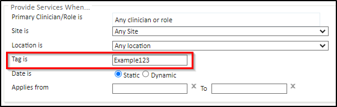

This article will walk you through associating a Billing Rule to a Clinician Session by using a Billing Tag.
Working with Billing Tags
All Billing Rules (except the Charge Band) contain a section labelled 'RuleName (applies) When...', e.g. 'Provide Services When...' for the Provide Services Rule.
This section allows stating the circumstances in which the rule applies, that is:
Primary Clinician/Role is - clicking in this field opens the Account search dialog, where the user can select a Role Group or search for a Medical Person (Clinician/Doctor) this rule will apply to, so that it will only trigger the charge when the appointment is booked with a member of the specified group or the individual selected.
Site is - this dropdown allows selecting the Site this rule applies to, so that it will only trigger the charge when the appointment is booked at that site. You can add sites to your chamber under Admin > Common Catalogues > Sites > +New Site
Location is - this dropdown allows selecting the Location (typically a Room)this rule applies to, so that it will only trigger the charge when the appointment is booked at that location. You can add sites to your chamber under Admin > Common Catalogues > Sites > +New Site > +New Location
As well as:
Tag is - an alphanumeric code can be entered here, resulting in this rule only applying on clinician sessions with the same tag.

To apply this rule to a particular Clinician's session(s), the following steps apply:
From the Start Page click Find Clinician.
Find the clinician using the available criteria and click the search result.
From the Doctor Details summary, select Site scheduler from the Actions panel.
On the week schedule page, click on a particular day column.
Create the session by completing relevant details. Click here for more details.
In the Tag is field type in the alphanumeric tag used on the Billing Rule you wish to apply on this session.